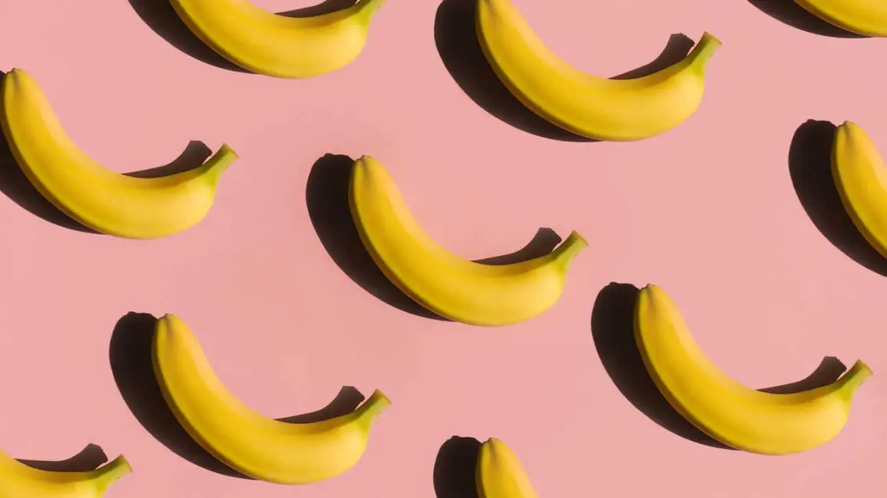
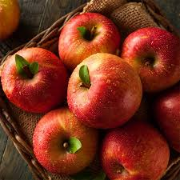
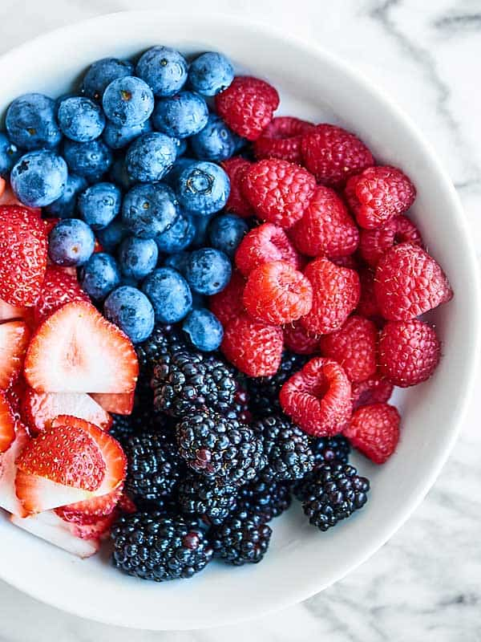

The top four healthiest fruits for college students—bananas, apples, oranges (and other citrus fruits), and berries—are packed with essential nutrients that support energy, brain function, immune health, and digestive well-being. They're also easy to store, portable, and affordable, making them perfect snacks for busy college life. Incorporating these fruits into your daily routine will not only help you stay healthy but will also boost your concentration and productivity.
1. Bananas
Key Nutrients: Potassium, vitamin C, vitamin B6, fiber. Health Benefits: Quick Energy Boost: Bananas are rich in carbohydrates, particularly natural sugars like glucose, which provide a quick and sustained energy boost—perfect for busy days or pre-study sessions. Heart Health: They are high in potassium, which helps maintain healthy blood pressure and proper muscle function, including the heart. Brain Function: The vitamin B6 in bananas helps support brain function and mood regulation, which is especially helpful during stressful periods like exams. Convenience: Bananas are portable, require no refrigeration, and are easy to peel and eat, making them a perfect snack between classes or on-the-go.
2. Apples
Key Nutrients: Fiber, vitamin C, antioxidants (polyphenols). Health Benefits: Gut Health: Apples are high in fiber, particularly pectin, which helps with digestion, promotes gut health, and keeps you feeling full longer. This can prevent overeating and help maintain a healthy weight. Brain Power: The antioxidants in apples, including quercetin, may help protect brain cells from oxidative stress, enhancing focus and memory, which is crucial for academic performance. Convenience: Apples are easy to store and carry around. They're a portable and no-mess fruit, making them perfect for a quick snack during class or study sessions.
3. Oranges (and other citrus fruits)
Key Nutrients: Vitamin C, fiber, folate, antioxidants. Health Benefits: Immune Support: Oranges are packed with vitamin C, which helps support the immune system—important for staying healthy during cold and flu season, particularly when you’re busy with schoolwork and exams. Energy and Hydration: Citrus fruits have a high water content, which helps keep you hydrated throughout the day. Staying hydrated is key for energy levels, focus, and overall mental clarity. Mental Clarity and Focus: Folate in oranges supports brain function and helps in reducing feelings of fatigue, which is vital for long study sessions. Convenience: Though a little messier than bananas, citrus fruits like oranges and grapefruits are still easy to peel and eat on-the-go, and their juicy, refreshing nature can provide a burst of energy during the day.

4. Berries (Blueberries, Strawberries, Raspberries)
Cognitive Function: Blueberries and other berries are rich in antioxidants, particularly flavonoids like anthocyanins, which may help improve memory, focus, and cognitive function—ideal for students who need to retain information and concentrate during lectures or study. Anti-inflammatory: The antioxidants in berries also help reduce inflammation, which can be helpful for overall health and recovery, especially during stressful periods. Low Calorie and Nutrient-Dense: Berries are naturally low in calories but rich in nutrients, providing a healthy, sweet snack without the sugar crash that more processed snacks might cause. Convenience: Berries are portable and can be easily added to a yogurt, smoothie, or eaten as a snack. Frozen berries are also affordable and convenient, making them a good choice for students on a budget.
